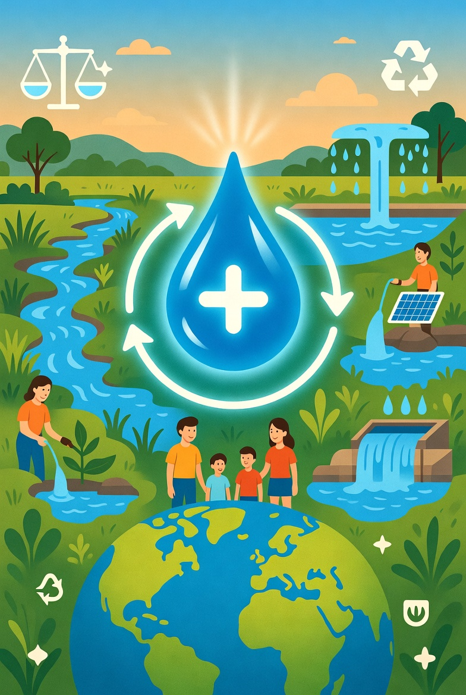

2000-2007

Water Conservation
Advanced water recycling systems.
Intel invested heavily in water conservation initiatives and implemented advanced reclamation technologies that reduced freshwater consumption while supporting manufacturing growth.